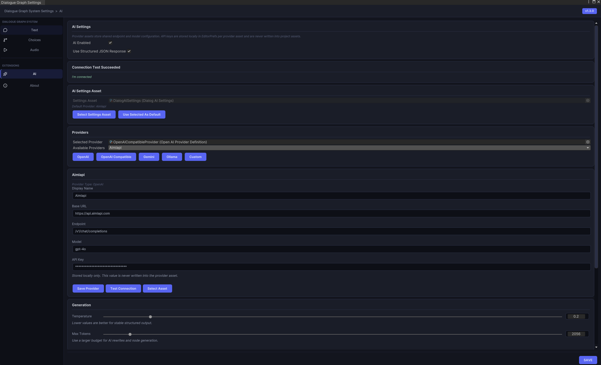

Settings System & Theming
The settings system centralizes runtime behavior that would otherwise be scattered across prefabs and scripts. The theming system lets you swap the entire visual style of the dialogue UI at runtime by assigning a different DialogThemeSO.
Runtime model
DialogSettingsRuntime loads a master settings asset from Resources and exposes helper accessors for text, choice, input, and audio settings. DialogManager uses these settings to resolve effective runtime behavior, with optional local overrides on the component.
Settings categories
- Text: reveal effect mode (Typewriter / Fade-in / Word-by-word), speed, fast-forward, skip, autoplay, punctuation pauses.
- Choices: navigation, hover selection, outline styling, pulse animation, hint and confirm behavior.
- Input: legacy-style key and axis configuration.
- Audio: volume, UI SFX, and stop/fade behavior.
Editor window
Open Tools → Dialogue Graph System → Settings. The window creates the settings assets if they do not already exist and groups configuration into separate panels.
UI Theming — DialogThemeSO
A DialogThemeSO is a ScriptableObject that packages every visual asset the dialogue UI needs — sprites, colors, and fonts — into a single swappable file. Assign it to the DialogUIManager component in the scene inspector. Changing the assigned theme at runtime instantly updates all UI elements.
What a theme controls
- Dialog panel — dialog box background, nameplate sprite, avatar/portrait frame, skip button sprite and icon.
- Choice buttons — normal and active state sprites, message icon, optional choice-row prefab override, hotkey background sprite.
- History panel — panel background, title bar, character line row, choice row, choice icon.
- Buttons — history button background and icon, close button, autoplay button background, autoplay play/pause icons.
- Text colors — dialog body, speaker name, choice normal/active, history speaker, history line, history choice, skip-all label, history title.
- Fonts
Creating a custom theme
- Right-click in the Project window and choose
Create → Dialog Graph System → UI Theme. - Fill in the sprite and color fields with your own assets.
- Assign the theme asset to the Theme field on your
DialogUIManagercomponent.
Included themes (5 ready to use)
Five complete themes are included in Assets/DialogGraphSystem/Definitions/DialogThemes/.
| Theme | Style |
|---|---|
| Fantasy RPG | Parchment-style panels, scroll borders, warm palette. |
| Gothic Horror | Dark stone textures, high-contrast red accents. |
| Minimalist | Clean flat panels, neutral grays, no decorative borders. Suits any genre. |
| Sci-Fi HUD | Sharp angular frames, cyan/blue tones, holographic feel. |
| Visual Novel | Soft gradient panels, rounded corners, pastel palette. |
Settings editor

Text reveal, speed, skip, and autoplay controls.
Choice settings

Button layout, input key mappings, and display timing for choice nodes.
Audio settings

Audio source assignment, volume sliders, and UI sound event bindings.
AI settings

Provider selection, endpoint routing, and prompt-mode configuration for the AI extension.